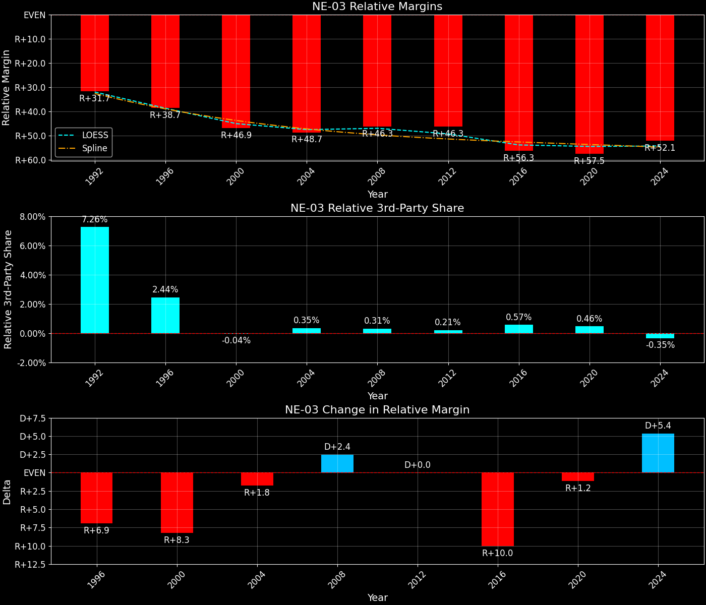

Nebraska's 3rd-Congressional District (NE-03)
Margins · 3rd-Party share · Pres. deltas

Relative margins · Relative 3rd-Party · Rel. deltas
Nebraska's 3rd-Congressional District (NE-03) — Total Data
| Year | EVs | D | R | State Margin | Nat. Margin | Rel. Margin | Total votes |
|---|---|---|---|---|---|---|---|
| 1968 | 1 | 50,432(26.5%) | 125,564(66.0%) | R+39.5 | R+0.6 | R+38.9 | 190,223 |
| 1972 | 1 | 47,762(24.4%) | 148,175(75.6%) | R+51.2(Δ R+11.8) | R+23.5(Δ R+23.0) | R+27.7(Δ D+11.2) | 195,937 |
| 1976 | 1 | 75,037(36.1%) | 127,283(61.3%) | R+25.1(Δ D+26.1) | D+2.2(Δ D+25.7) | R+27.3(Δ D+0.4) | 207,782 |
| 1980 | 1 | 45,247(20.5%) | 160,433(72.8%) | R+52.2(Δ R+27.1) | R+9.9(Δ R+12.1) | R+42.3(Δ R+15.0) | 220,498 |
| 1984 | 1 | 47,705(21.8%) | 170,955(78.2%) | R+56.4(Δ R+4.1) | R+18.1(Δ R+8.2) | R+38.3(Δ D+4.1) | 218,660 |
| 1988 | 1 | 69,030(32.4%) | 144,089(67.6%) | R+35.2(Δ D+21.1) | R+7.7(Δ D+10.4) | R+27.5(Δ D+10.8) | 213,119 |
| 1992 | 1 | 57,590(23.4%) | 121,606(49.5%) | R+26.0(Δ D+9.2) | D+5.6(Δ D+13.3) | R+31.6(Δ R+4.1) | 245,871 |
| 1996 | 1 | 64,382(28.7%) | 132,015(58.8%) | R+30.1(Δ R+4.1) | D+8.6(Δ D+3.0) | R+38.7(Δ R+7.1) | 224,425 |
| 2000 | 1 | 55,859(24.9%) | 159,815(71.4%) | R+46.4(Δ R+16.3) | D+0.5(Δ R+8.0) | R+46.9(Δ R+8.2) | 223,984 |
| 2004 | 1 | 60,156(23.7%) | 189,885(74.9%) | R+51.1(Δ R+4.7) | R+2.5(Δ R+3.0) | R+48.7(Δ R+1.8) | 253,664 |
| 2008 | 1 | 73,099(29.6%) | 169,361(68.6%) | R+39.0(Δ D+12.1) | D+7.3(Δ D+9.7) | R+46.3(Δ D+2.4) | 246,742 |
| 2012 | 1 | 72,110(27.7%) | 182,067(69.9%) | R+42.2(Δ R+3.2) | D+3.9(Δ R+3.4) | R+46.1(Δ D+0.2) | 260,288 |
| 2016 | 1 | 53,290(19.7%) | 199,657(73.9%) | R+54.2(Δ R+12.0) | D+2.1(Δ R+1.8) | R+56.3(Δ R+10.2) | 270,034 |
| 2020 | 1 | 65,854(22.3%) | 222,179(75.4%) | R+53.0(Δ D+1.2) | D+4.4(Δ D+2.3) | R+57.5(Δ R+1.2) | 294,831 |
| 2024 | 1 | 70,301(22.4%) | 238,245(76.0%) | R+53.6(Δ R+0.6) | R+1.5(Δ R+6.0) | R+52.1(Δ D+5.4) | 313,342 |
Column explanations
- Δ
- Change (delta) in the value from the previous election year.
- Year
- Election year.
- EVs
- Number of electoral votes allocated to this state or unit.
- D
- Number of votes for the Democratic candidate (raw count(pct%)).
- R
- Number of votes for the Republican candidate (raw count(pct%)).
- State Margin
- Margin between the two major-party candidates, including third-party votes ((D - R)/total).
- Nat. Margin
- The national presidential margin for that year, including third-party votes ((D_total - R_total)/total_votes).
- Rel. Margin
- The presidential margin relative to the national presidential margin (Margin - Nat. Margin).
- Total votes
- Total voter turnout or ballots cast (when provided).
Nebraska's 3rd-Congressional District (NE-03) — Third-Party Data
| Year | Other votes | State 3rd-Party Share | 3rd-Party Nat. Share | 3rd-Party Rel. Share |
|---|---|---|---|---|
| 1968 | 14,227(7.5%) | 7.48% | 13.59% | -6.11% |
| 1972 | 0(0.0%) | 0.00% | 0.09% | -0.09% |
| 1976 | 5,462(2.6%) | 2.63% | 0.33% | 2.30% |
| 1980 | 14,818(6.7%) | 6.72% | 6.98% | -0.26% |
| 1984 | 0(0.0%) | 0.00% | 0.12% | -0.12% |
| 1988 | 0(0.0%) | 0.00% | 0.21% | -0.21% |
| 1992 | 66,675(27.1%) | 27.12% | 19.23% | 7.89% |
| 1996 | 28,028(12.5%) | 12.49% | 9.68% | 2.81% |
| 2000 | 8,310(3.7%) | 3.71% | 3.65% | 0.06% |
| 2004 | 3,623(1.4%) | 1.43% | 0.84% | 0.59% |
| 2008 | 4,282(1.7%) | 1.74% | 1.38% | 0.36% |
| 2012 | 6,111(2.3%) | 2.35% | 1.62% | 0.73% |
| 2016 | 17,087(6.3%) | 6.33% | 5.54% | 0.79% |
| 2020 | 6,798(2.3%) | 2.31% | 1.84% | 0.46% |
| 2024 | 4,796(1.5%) | 1.53% | 1.88% | -0.35% |
Column explanations
- Year
- Election year.
- Other votes
- Number of votes for third-party (other) candidates (raw count(pct%)).
- State 3rd-Party Share
- Share of the vote received by third-party (other) candidates.
- 3rd-Party Nat. Share
- The national third-party share for that year (3rd-Party votes / total votes).
- 3rd-Party Rel. Share
- Third-party share relative to the national third-party share (3rd-Party share - Nat. 3rd-Party share).

Two-party margins · relative · deltas
Nebraska's 3rd-Congressional District (NE-03) — Two-Party Data
| Year | 2-Party Margin | 2-Party Nat. Margin | 2-Party Rel. Margin |
|---|---|---|---|
| 1968 | R+42.7 | R+0.7 | R+42.0 |
| 1972 | R+51.2(Δ R+8.6) | R+23.6(Δ R+22.9) | R+27.7(Δ D+14.3) |
| 1976 | R+25.8(Δ D+25.4) | D+2.2(Δ D+25.8) | R+28.0(Δ R+0.3) |
| 1980 | R+56.0(Δ R+30.2) | R+10.6(Δ R+12.8) | R+45.4(Δ R+17.3) |
| 1984 | R+56.4(Δ R+0.4) | R+18.1(Δ R+7.5) | R+38.2(Δ D+7.1) |
| 1988 | R+35.2(Δ D+21.1) | R+7.8(Δ D+10.4) | R+27.5(Δ D+10.8) |
| 1992 | R+35.7(Δ R+0.5) | D+6.9(Δ D+14.7) | R+42.6(Δ R+15.2) |
| 1996 | R+34.4(Δ D+1.3) | D+9.5(Δ D+2.6) | R+43.9(Δ R+1.3) |
| 2000 | R+48.2(Δ R+13.8) | D+0.5(Δ R+8.9) | R+48.7(Δ R+4.8) |
| 2004 | R+51.9(Δ R+3.7) | R+2.5(Δ R+3.0) | R+49.4(Δ R+0.7) |
| 2008 | R+39.7(Δ D+12.2) | D+7.4(Δ D+9.8) | R+47.1(Δ D+2.3) |
| 2012 | R+43.3(Δ R+3.6) | D+3.9(Δ R+3.4) | R+47.2(Δ R+0.1) |
| 2016 | R+57.9(Δ R+14.6) | D+2.2(Δ R+1.7) | R+60.1(Δ R+12.9) |
| 2020 | R+54.3(Δ D+3.6) | D+4.5(Δ D+2.3) | R+58.8(Δ D+1.3) |
| 2024 | R+54.4(Δ R+0.2) | R+1.6(Δ R+6.1) | R+52.9(Δ D+5.9) |
Column explanations
- Δ
- Change (delta) in the value from the previous election year.
- Year
- Election year.
- 2-Party Margin
- Margin between the two major-party candidates, ignoring third-party votes ((D - R)/(D + R)).
- 2-Party Nat. Margin
- The national presidential margin for that year, including third-party votes ((D_total - R_total)/total_votes).
- 2-Party Rel. Margin
- The presidential margin relative to the national presidential margin (Margin - Nat. Margin).